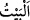
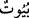
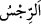

yapılan ibâdetlerin en şereflisi olan -nitekim Ebü’l-Leys Tefsiri’nde böyle geçmektedir-
“zekâtı verin,” diğer emir ve yasaklar konusunda hususen “Allâh’a ve Rasûlüne itâat
edin.” Bazıları şöyle demiştir: Farzlarda Allâh’a sünnetlerde Rasûlü’ne itâat edin.
“Ey Ehl-i Beyt! Allah sizden, sadece” ırz ve haysiyetinizi lekeleyip kirletecek
“günahı gidermek ve sizi” ma‘sıyet kirlerinden iyice “tertemiz yapmak istiyor.”
Kişinin ırzı, kişinin koruyup muhâfaza ettiği tarafıdır. Bu ifâde yukarıda beyân edilen
emir ve yasaklamanın sebebini bildirmek üzere bir başlangıç cümlesidir. Burada hitâbın
genelleştirilmesiyle hüküm de Hz. Peygamber (s.a.)’in eşlerinden başkasını da içine
alacak şekilde genişletilmiş ve “Ey Ehl-i Beyt” buyrularak kimlerin kasdedildiği
açıklanmıştır.
Ehl-i Beytten murad, nübüvvet hânesinin içine aldığı erkek ve kadınlardır. Râğıb
şöyle demiştir: “Kişinin ehli, neseb, din veya bunlara benzer san‘at, ev, belde ve iş gibi
şeylerin kendisini ve onları bir araya getirdiği kimselerdir. Aslında kişinin ehli, aynı
meskeni paylaştığı âile ferdleridir. Sonra mecazen nesep birliği olanlara da ehl-i beyt
denilmiştir. Ancak mutlak olarak ‘ehl-i beyt’ denilince örfen Hz. Peygamber (s.a.)’in
âilesi anlaşılır. Ehl-i Beyt olarak Hz. Peygamber (s.a.)’in Hâşimoğulları’ndan olan
âilesi bilinir. Hz. Peygamber (s.a.): “Selman bizden, Ehl-i Beyt’tendir.”[205] buyurarak
bir kavmin efendisinin onlara nisbet edilmesinin doğru olacağına dikkat çekmiştir.
“ (ev)” aslında insanın geceleyin sığınıp barındığı yerdir. Sonra bu hususta gece
dikkate alınmaksızın her barınağa ‘beyt’ denilmiştir. Bu kelimenin çoğulu “ ve “tur. Ancak “ meskenlere, “
meskenlere, “ ise şiir için daha özeldir. Yine taştan, kerpiçten,
ise şiir için daha özeldir. Yine taştan, kerpiçten,
yünden, kıl ve deriden yapılan barınaklara da ‘beyt’ denmiştir. Şiirin beyti de eve
benzetilmiştir. Bir şeyin mekanı da ‘beyti/evi’ diye ifâde edilmiştir. Bu bilgilerin hepsi
el-Müfredât’tan alınmıştır.
Ma‘sıyet için istiare olarak “ (pislik)” kelimesinin kullanılması ve onun çaresi
olarak temizlemenin gösterilmesi, ondan iyice uzaklaştırıp nefret ettirmek içindir.
İşte gördüğün gibi bu âyet Hz. Peygamber (s.a.)’in hanımlarının Ehl-i Beyt’inden
olduğuna açık bir delil ve parlak bir huccettir. Ehl-i Beyt’i, Hz. Fâtıma, Hz. Ali ve
oğulları Hz. Hasan ve Hüseyin (r.a.)’a tahsis etmeleri konusunda Şîa mezhebinin
görüşünün bâtıl olduğuna hükmetmektedir. Şia’nın delil olarak kabul ettiği şu hususa
gelince, Hz. Peygamber (s.a.) bir sabah üzerinde siyah kıldan örülmüş bir aba ile geldi
ve oturdu. Sonra Hz. Fâtıma geldi. Onu örtünün altına aldı. Peşinden Hz. Ali geldi. Onu
da örtünün altına aldı. Sonra Hz. Hasan ve Hüseyin geldi ve onları da örtünün altına
aldı ve şöyle buyurdu: “Ey Ehl-i Beyt! Allah sizden, sadece günahı gidermek ve sizi
tertemiz yapmak istiyor.”
Bu hâdise onların Ehl-i Beyt’ten olduklarına delildir. Fakat onlardan başkasının Ehl-i
Beyt’ten olmadığına delil değildir. Bu hâdisenin onların iddiâsına delâlet ettiği farz
edilse bile nassın karşısında olduğu için ona îtibar edilmez.
Kâşifî şöyle demiştir: “İşte bu sebeple beş kişiye “Âl-i âbâ” ismini verdiler.”